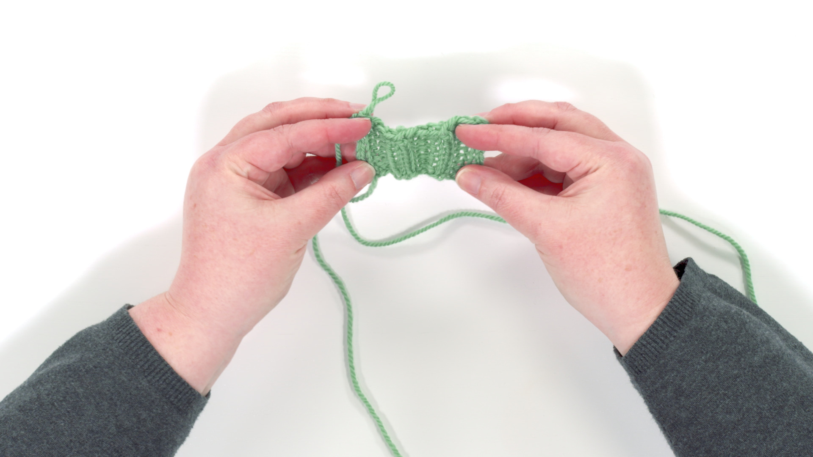

Rock Your Ribbing
Rock Your Ribbing
When most people thinking of a ribbed knitting pattern, they think of simple knit and purl stitch patterns. While these are a staple in knitting, there’s so much more you can do with ribbing!
It's commonly used for cuffs, collars, and edges to add structure and elasticity to garments. With the right approach, you can achieve ribbing that lies flat, holds its shape, and enhances the overall look of your project.
Featured Sulky Products:
- Knitting Needles
- Yarn
- Tapestry Needle
- Measuring Tape
- Stitch Markers
- Scissors
Step-by-Step For Creating Ribbing
1. Cast On: Using a flexible cast-on method (like the long-tail cast-on), cast on the number of stitches needed for your project. Ensure the stitch count matches your ribbing pattern (e.g., multiples of 2 for 1x1 ribbing).
2. Choose Your Ribbing Style: 1x1 Ribbing: Alternate between one knit stitch and one purl stitch.
2x2 Ribbing: Alternate between two knit stitches and two purl stitches.
Experiment with other ribbing combinations if desired.
3. Knit the Ribbing: Work the first row of your chosen ribbing pattern.
Continue knitting the ribbing pattern for the desired length, keeping your tension even for a uniform appearance.
4. Transition to Main Stitch Pattern: Once the ribbing reaches the intended length (e.g., 1 inch for cuffs, 2 inches for a neckline), switch to the main stitch pattern for your project.
5. Bind Off (if ribbing is the final edge): Use a stretchy bind-off method, such as the Stretchy Bind-Off, to maintain elasticity.
6. Finishing Touches: Block your piece to even out the stitches and set the ribbing in place. Use a light misting or steam blocking depending on your yarn.

Share tips, start a discussion, or ask one of our experts or other students a question.